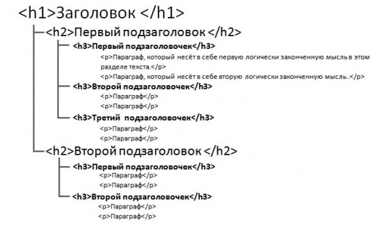

Во время прошлого живого разбора работ Владимир попросил меня рассказать потоку про SEO-оптимизацию (тавтология, но так уже привыкли), то есть улучшение сайта для соответствия требованиям поисковых систем: Яндекса, Гугла и т.д. Ок, как раз пробил приступ графомании. Базовую информацию и определения гораздо лучше меня вам выдаст (внезапно!) поисковик, а я попробую набросать что-то применимое именно к нашему курсу.
Прошу прощения за длиннопост, ещё и дизайн не планировался под статейник, но короче писать нет смысла. И ежели чего важного не сказал - не пинайте, пишу в спешке и невыспамшись. Итак:
9 SEO-советов начинающим верстальщикам!
-
Не надо вообще переживать за SEO
Самый важный совет для вас :) Пусть идёт по порядку нулевым, т.к я вроде бы ничего и не сказал, но суть верна. Это не ваша работа и если не подписывались, так или иначе, на оптимизацию сайта - она вам не нужна и никто не вправе с вас такое спрашивать. SEO должны заниматься специально обученные люди, у вас, как минимум, нет необходимых данных для анализа и последующего грамотного составления тегов, линковки и т.д. Зато у вас есть своё ТЗ, вот по нему и работайте.
И тем не менее, если хочется расширить кругозор или облегчить задачу клиенту и специалистам в дальнейшем, то стоит знать несколько полезных вещей. Возможно, их реализация не потребует от вас особых усилий, а пользу принесёте, может быть даже хорошую репутацию заработаете.
-
Заголовки - это важно!
Грамотные заголовки h1...h6 заметно влияют на поисковое продвижение. Что точно там должно быть - пусть сеошник решает, но стоит обратить внимание на такие моменты:
Заголовок <h1> должен: а) быть на странице обязательно; б) быть строго одним таким заголовком. Владимир про это говорил, но напомню, ибо важно.
Дополнительно, если вам вдруг придётся заполнять заголовки, то делайте их уникальными. То есть, если на сайте с картинками несколько разделов, то не пишите кругом «Галерея», а сделайте чуть подробнее, по теме страницы: «Картины с прекрасными пельменями», «Лучшие фото кротов», «Слегка падшие женщины» и т.д. Если уж совсем не до того или такая задача не ставилась - хотя бы «Галерея 1», «Галерея 2».
Ниже ещё напомню, но тут к месту: код заголовка в идеале должен быть чистым, то есть: <h1>*содержимое*</h1>. Это не является грубой ошибкой и бросаться переделывать такое не стоит, но проскакивал инфа в одно время об уместности такого подхода. Сможете обойтись без классов в коде заголовка - отлично. Про стили и так понятно, надеюсь.
А вот теперь и главная ошибка начинающих верстальщиков и не только! Пожалуйста, во имя великого крота, не используйте заголовки для придания стиля тексту! Ну то есть, если вам надо жирненьким тут написать, не ставьте сразу тег h! Заголовки служат исключительно для разметки логической структуры контента страницы. Вот картиночка, для наглядности (дико извиняюсь, для мобилки в нормальном качестве не нашлось):
 -
HTML код должен быть чистым
Не надо захламлять страницу изнутри разными стилями, параметрами и т.д. - поисковики это не любят. Всё, что может быть вынесено в css - должно быть вынесено в css. И там тоже должен быть порядок, оптимизируйте код, ищите ошибки и неиспользуемые элементы с помощью валидаторов и подобных сервисов (Владимир рассказывал, вспоминайте).
-
Не дублируем код!
Да, бывает и такое. Как-то на одном из моих проектов внедряли адаптивную вёрстку и реализована она была так, что контент в коде продублировался. Весь. А статья там была ого-го. И поисковик, увидев внезаное удвоение текста, сильно удивился. А потом и я удивился, так как не ждал подобной подставы. Итого - переделка и ценный опыт. Не надо так!
Часто различные сервисы, украшалки, а то и даже люди могут по каким-либо причинам задублировать что-то не особо значимое, по их мнению, например, картинку или ссылку в коде. Визуально это никак не заметно, но в некоторых случая приводит к неудобствам. Например, если сайт содерожит огромное количество внутренних ссылок на странице, а ещё и дубль случается, то поисковый бот посылает вам лучи негодования, ведь ему все эти тысячи ссылок обходить. Так что имейте в виду. Но не паникуйте из за каждой ссылочки, конечно же, пусть сеошник за вас паникует :)
-
Ставим ссылки правильно
Ссылки бывают внутренние (между страницами нашего сайта) и внешние (на другие сайты). Начнём с внешних. Допустим, надо просто отправить посетителя на другой сайт за чем-нибудь полезным или просто посмотреть, как там круто. Точно надо? Ладно, ставим ссылку. Но тогда не забываем добавить ей атрибут rel="nofollow". Зачем это? Если очень вкратце - это не позволит отдавать сео-параметры впустую. не всё так просто и nofollow ссылки тоже нужны и важны. Просто поставьте такую штуку, пусть будет. Часть движков сайтов уже настроены на это автоматом, перепроверьте на всякий случай.
Что касается внутренних, то какие и куда именно надо ставить - снова решает SEO-специалист или же ваше ТЗ. Но надо знать следующее. Ссылки могут быть двух видов:
- Абсолютные, с указанием полного адреса с протоколом, типа: http://site.ru/page1.html;
- Относительные, которые работают только внутри вашего сайта с отсчётом от корня. Например: /page1.html
Так вот. Оба варианта имеют место быть, есть свои плюсы и минусы. Ваша задача - использовать любой, но только один. Не желательно ставить ссылки и так, и эдак. Сейчас чаще встречаются относительные, из за удобства переезда, например. Посмотрите, что генерирует CMS (система управления сайтом) по умолчанию, от того и исходите.
-
Работаем с названиями адресов и файлов
И в очередной раз по вопросам содержимого названий файлов и страниц мы достаём задолбавшегося сеошника. Но, как правило, рекомендаций на эту тему не бывает, если проект не в сопровождении у спеца, так что обращаем внимание только на эти моменты:
- Кириллица. Её быть не должно. Браузеры понимают наш язык, но во множестве моментов могут обрабатывать очень криво. А какая-нибудь экзотика может и вовсе не понять. Следуем международным стандартам. Транслит вполне допускается, основные поисковые системы его принимают без проблем.
- Разделители. Используем только дефисы, без нижних подчёркиваний. Гугл как-то выкладывал мнение руководства о семантическом восприятии разделителей и подчеркивание - это объединение соседних слов. Нам такое, скорее, не надо, так как работаем с фразами. Как и в случае с чистыми заголовками, это не грубая ошибка и если сайт уже в работе, то крайне хорошо подумайте, стоит ли менять готовое. Но с нуля делать как лучше - в самый раз. То есть: /about-me.html , а не /about_me.html .
- Понятность. Глядя на ссылку сразу должно быть ясно что там и куда попадём. Например: /skidki-na-razlivnoe-pivo.html всяко лучше чем /page/index146.html
- Регистр. Для файлов это не критично, а вот для адресов - да. При неудачном раскладе поисковик может посчитать, например: /skidki-na-razlivnoe-pivo.html и /Skidki-Na-Razlivnoe-Pivo.html разными адресами, а это очень плохо. Так что приучаемся не использовать заглавные буквы. По-хорошему, это уже задача программиста вообще их запретить в ссылках.
-
Заполняем теги картинок
И снова это не к вам, а известно к кому. Но лучше это делать сразу, т.к про такие теги регулярно забывают, просто правило хорошего тона. Так что если пришлось, то пишем в теге alt, который показывает инфу о не загруженной картинке и в теге title (у картинки), который отвечает за инфу при наведении на неё, что-нибудь тематическое. Просто опишите картинку и добавьте что-то типа "картинка", "фото" и т.д. Например: alt="фото крота в дикой природе" или alt="мужик подглядывает в женской бане горячее фото". Теги могут быть одинаковыми, дальше уже известно кто разберётся.
-
Используем семантическую разметку
Владимир немного о ней говорил, но это уже современный стандарт, а не прихоть, так что учим обязательно. С помощью тегов main, aside, footer, header и др. мы показываем браузеру где у нас на сайте что расположено по задумке - шапка, подвал, навигационные элементы и прочее. Тонкостей хватает, в части я ещё сам до конца не разобрался, но основы знать надо. Недавно нашёл познавательную статейку, можно почитать вот тут: https://medium.com/@stasonmars/%D1%81%D0%B5%D0%BA%D1%80%D0%B5%D1%82%D1%8B-%D0%B8%D1%81%D0%BF%D0%BE%D0%BB%D1%8C%D0%B7%D0%BE%D0%B2%D0%B0%D0%BD%D0%B8%D1%8F-%D1%81%D0%B5%D0%BC%D0%B0%D0%BD%D1%82%D0%B8%D1%87%D0%B5%D1%81%D0%BA%D0%BE%D0%B8%CC%86-%D0%B2%D0%B5%D1%80%D1%81%D1%82%D0%BA%D0%B8-%D0%B2-html5-c7cd5e6f1ebb. Помните про кириллицу, да?
Помимо семантической разметки, есть ещё и не менее необходимая микроразметка для более точечных оформлений. Она показывает браузеру где у вас адрес компании, цена на товаре, ссылочка на соц. сеть и т.д. Видов и схем несколько, оптимально будет изучить спецификации по оформлению для двух самых крупных ПС: Яндекса https://yandex.ru/support/webmaster/schema-org/ и Гугла https://developers.google.com/search/docs/guides/sd-policies?hl=ru. У них же поищите и валидаторы для проверки.
-
И напоследок - Mobile First!
Что это - вы уже знаете, напомню только в очередной раз, что это не прихоть, а современные требования. Будьте добры соответствовать. Если вам чётко не пояснили в ТЗ иное - только Mobile First.